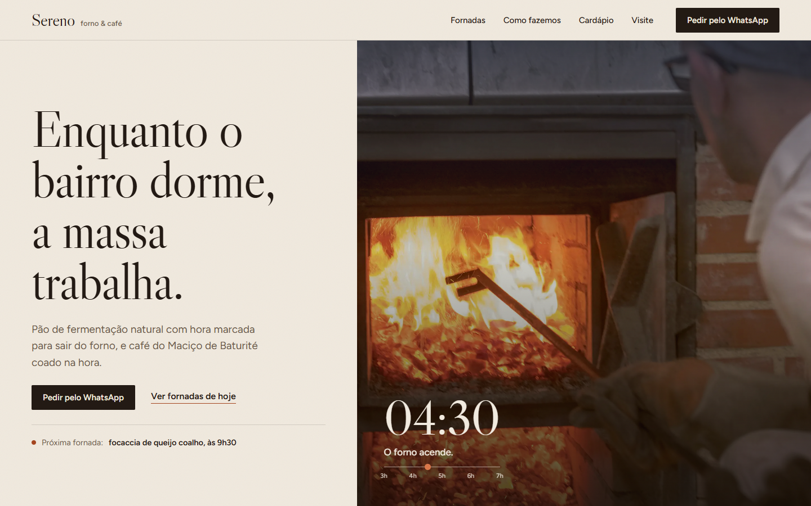
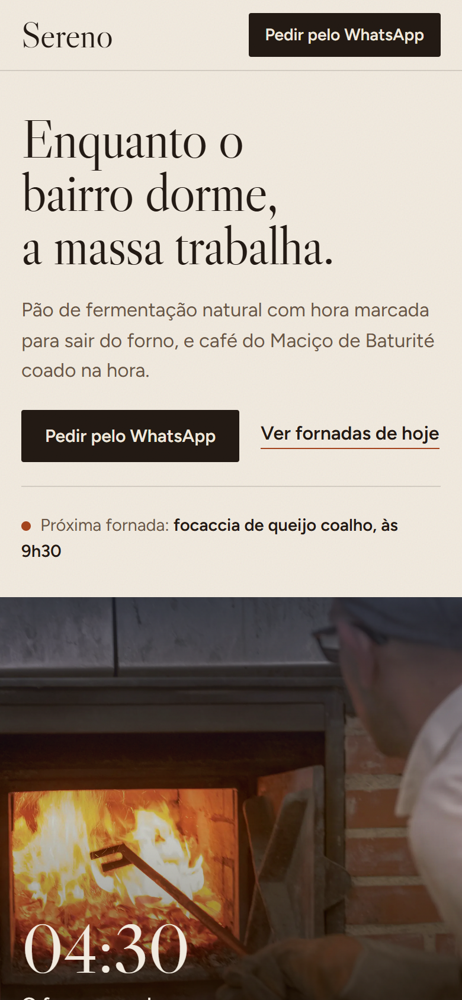
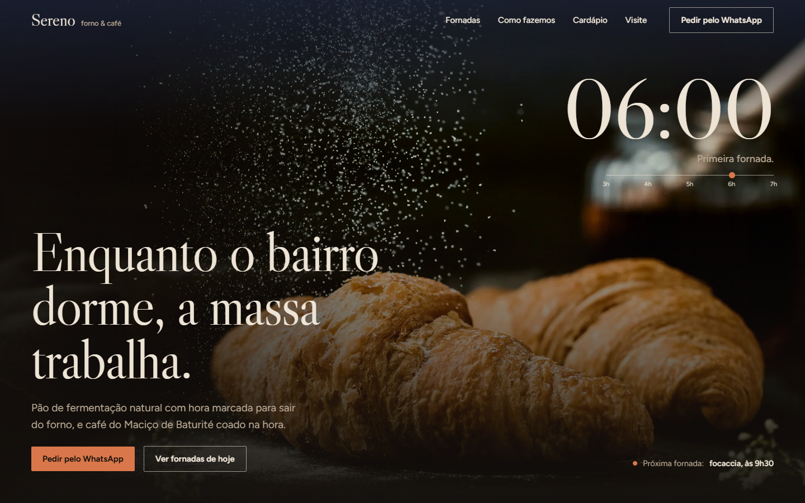
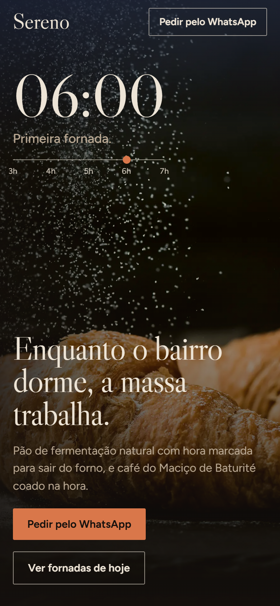
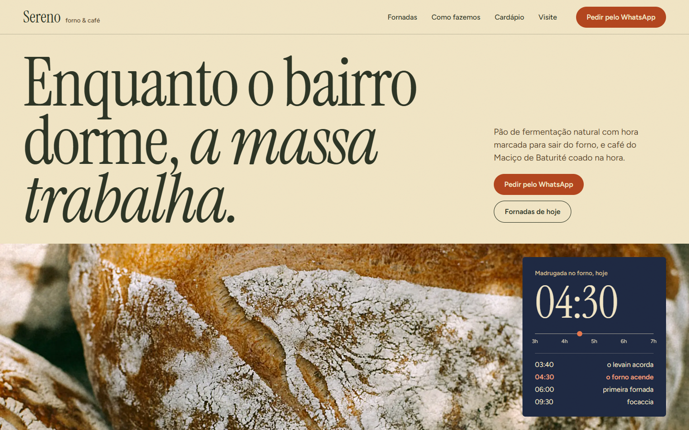
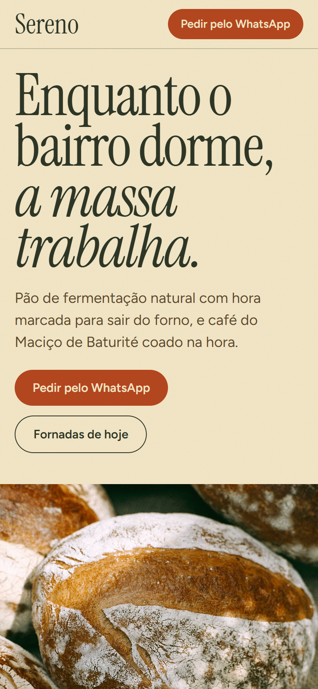
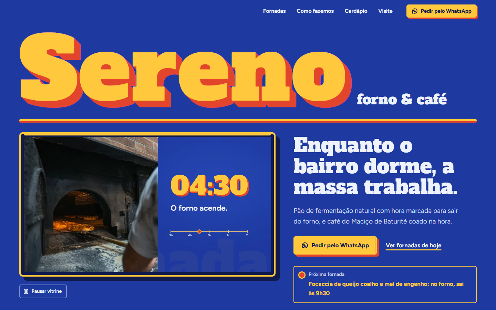
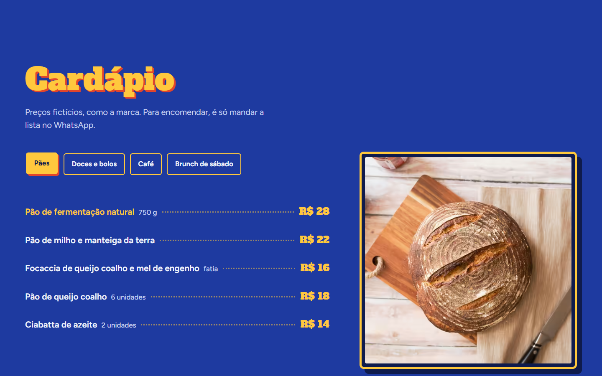

Cada direção tem um mockup estático da primeira tela (desktop 1440×900 e celular 390×844, com a vitrine da madrugada e o relógio) e um style tile (paleta, tipografia, foto, botões, motion, como resolve os 3 problemas da v1 e o que muda em relação a ela). Fotos de banco (Unsplash) com tratamento quente; as imagens próprias por IA entram depois da escolha. Estudo das referências: moodboard.
Editorial claro e quente; a madrugada aparece numa janela escura dentro do papel.


Cinema escuro que amanhece; o relógio da vitrine vira o centro do hero de tela cheia.


Mercearia fina contemporânea; serifa condensada enorme e a "comanda da madrugada".



